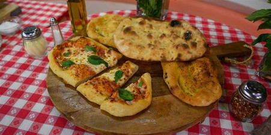

Pinsa Romana (Roman-Style Pizza)
Ingredients
COOK TIME: 20 minutes PREP TIME: 20 minutes YIELD: 2 pizzas:
The difference between pizza and pinsa is all in the dough. Traditional pizza crust is denser and chewier, while
pinsa is lighter and crispier.
PINSA DOUGH:

- 2 cups all-purpose flour
- ½ cup whole wheat flour
- 1/2 cup rice flour
- 1 cup cold water
- 1 teaspoon salt
- ½ cup spelt flour
- ½ cup rye flour
- 1/2 teaspoon dry yeast
- 1 tablespoon extra-virgin olive oil, plus more for rubbing
PINSA TOPPING:
- 12 ounces mozzarella cheese
- 4 tablespoons tomato sauce
- Fresh parsley, chopped
- Extra-virgin olive oil
- Salt and freshly ground black pepper, to taste
Steps
For the pinsa dough:
- In a large bowl, combine all-purpose flour, rice flour, spelt, wheat flour, rye flour and yeast.
- Continuously whisking, slowly add cold water.
- Add extra virgin olive oil and salt. Mix well. Cover the bowl with plastic wrap ora lid and let rest for 30
minutes. Mix again and let rest for another 30 minutes.
Mix with a wooden spoon for the third time.
- Now cover again with a plastic wrap or a lid and place the bowl in the fridge for at least 24 hours.
- After the dough has chilled, turn the bowl upside down and let the dough come out of the bowl.
- Divide the dough into two parts. Using your hands, form a round ball out of each piece of the dough.
- Cut two rectangular pieces of parchment paper that fit your baking sheet.
- Place each dough ball on a parchment paper and dust with rice flour.
- Cover the dough with a linen towel and let rise for 1 hour.
- After letting the dough rest, pour a drizzle of extra-virgin olive oil on each piece of the dough and, using
your fingers, press into the dough stretching it from center to sides, forming an oval pinsa shape.
To assemble:
- Preheat oven to 450°F. Transfer parchment paper with pinsa onto a baking sheet.
- Drizzle with some more olive oil.
- Bake in a lower third of a preheated oven for about 10 minutes.
- Remove from the oven and top with mozzarella and tomato sauce. Return to the oven and bake pizzas on the middle rack
until pinsa has browned on the edges and cheese has melted.
- Garnish with chopped parsley and freshly ground pepper.
Back to Home